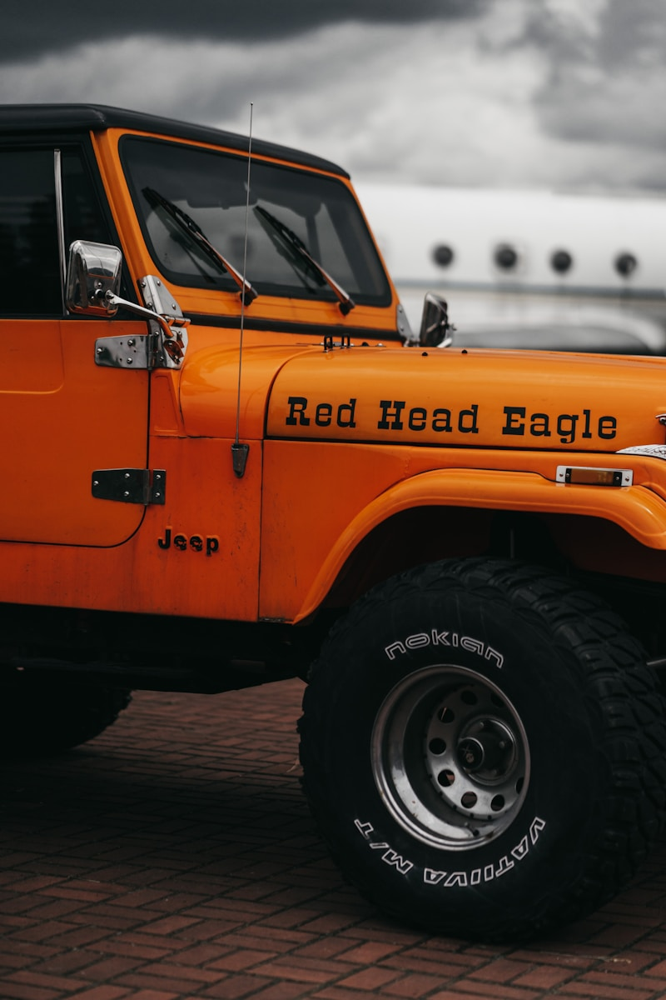

Jeep Repair & Service in Cedar Rapids
Trail-tested expertise for every Jeep on the road — and off it.
Your Trusted Jeep Repair Shop in Cedar Rapids
Whether you drive a Wrangler on the trails, a Grand Cherokee on the highway, or a Gladiator to the job site, Cedar Automotive provides expert Jeep repair and maintenance you can rely on. Our technicians understand the unique engineering of Jeep vehicles — from solid front axles and transfer cases to the latest electronic 4WD systems — and have the diagnostic tools to service them all correctly.
Jeeps are built for adventure, but Iowa roads, salt, and weather take a toll. We handle everything from routine oil changes and brake service to diagnosing the dreaded death wobble, tracking down electrical faults, and servicing 4WD systems. We also inspect aftermarket lift kits and suspension modifications for safety and proper alignment. Cherokee, Compass, and Renegade owners trust us for reliable daily-driver maintenance too.
Located in Cedar Rapids near the regional airport, Cedar Automotive serves Jeep owners across Eastern Iowa. We provide upfront quotes, use quality parts, and stand behind our work. Call or book online to schedule your appointment.
Jeep Services We Offer
- Oil changes and fluid services (all Jeep engines)
- Brake pad, rotor, and caliper replacement
- 4WD system diagnostics, transfer case, and differential service
- Suspension and lift kit inspection, repair, and alignment
- Engine diagnostics, repair, and performance troubleshooting
- Automatic transmission service and repair (ZF 9-speed, 8-speed, and more)
- Electrical system diagnostics and module programming
- Cooling system service, radiator replacement, and thermostat repair
- Car key and key fob programming

Why Choose Cedar Automotive for Your Jeep?
4WD & Drivetrain Expertise
From Command-Trac to Rock-Trac, we know Jeep 4WD systems inside and out. We service transfer cases, differentials, axle shafts, and locking hubs to keep your Jeep trail-ready.
Honest & Transparent
We give you a clear quote before any work starts. No upselling, no hidden charges. You approve every repair before we begin so there are never surprises on your bill.
Stock & Modified Jeeps Welcome
Whether your Jeep is bone stock or fully built with a lift kit, bumpers, and lockers, we have the experience to service and repair it safely and correctly.
Common Jeep Issues We Fix
Death Wobble
The infamous Jeep death wobble is a violent front-end oscillation triggered by bumps at highway speed. It is typically caused by a worn track bar, ball joints, tie rod ends, or steering stabilizer. We inspect every front-end component, identify the root cause, and replace the worn parts to eliminate it permanently.
Oil Consumption (3.6L Pentastar)
The 3.6L Pentastar V6 used in many Jeep models can develop excessive oil consumption due to cylinder head issues and valve guide wear. We perform leak-down tests and consumption monitoring to determine whether the issue requires valve work, PCV service, or deeper engine repair.
TIPM Module Failure
Like other Chrysler products, Jeeps use a Totally Integrated Power Module (TIPM) that can fail, causing no-start conditions, fuel pump relay sticking, random warning lights, and erratic electrical behavior. We diagnose, test, and replace faulty TIPM units to restore reliable operation.
Transmission Problems (ZF 9-Speed)
The ZF 9-speed automatic used in Cherokee, Compass, and Renegade models is known for rough shifting, hesitation, and harsh downshifts. We perform transmission fluid services, solenoid replacement, software updates, and complete rebuilds to address shifting complaints.
Water Leaks (Wrangler)
Wrangler owners frequently deal with water leaks around the freedom top panels, windshield seal, and door weatherstripping. Left unaddressed, moisture intrusion can damage electronics and cause mold. We locate leak sources, replace seals, and ensure your Wrangler stays dry inside.
Exhaust Manifold Cracks
Cracked exhaust manifolds are a common issue on Jeep 3.8L and 3.6L engines, causing an exhaust leak, ticking noise at startup, and a sulfur smell. We replace cracked manifolds with quality parts and new gaskets to restore proper exhaust sealing and quiet operation.
Related Services
Frequently Asked Questions
Can you fix the Jeep death wobble?
Yes. The death wobble is a violent shaking of the front end typically caused by worn steering and suspension components such as the track bar, ball joints, tie rod ends, or steering stabilizer. We inspect every front-end component, identify the root cause, and replace the worn parts to eliminate the wobble for good.
Do you service Jeep 4WD and transfer case systems?
Absolutely. We service all Jeep 4WD systems including Command-Trac, Rock-Trac, Selec-Trac, and Quadra-Trac. Our services include transfer case fluid changes, actuator repair, front and rear differential service, and complete 4WD system diagnostics.
What Jeep models do you work on?
We service all Jeep models including the Wrangler (JK and JL), Grand Cherokee (WK2 and WL), Cherokee (KL), Compass, Renegade, and Gladiator. Whether you have a stock daily driver or a modified trail rig, we have the tools and experience to keep it running reliably.
Do you program Jeep keys and fobs?
Yes — we program Jeep keys and key fobs for all models including Wrangler, Grand Cherokee, Cherokee, Compass, and Gladiator. We handle transponder key programming, proximity fob replacement, and all-keys-lost situations. Call (319) 450-7584 for pricing.